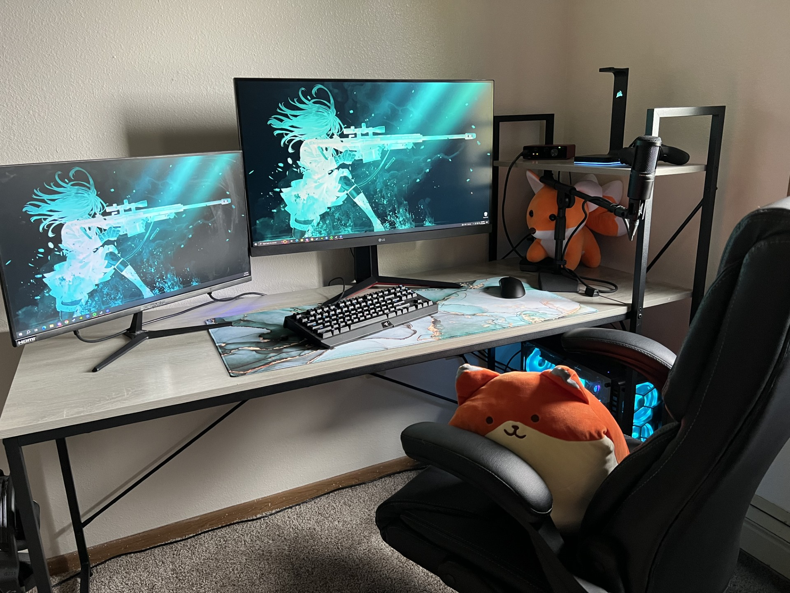
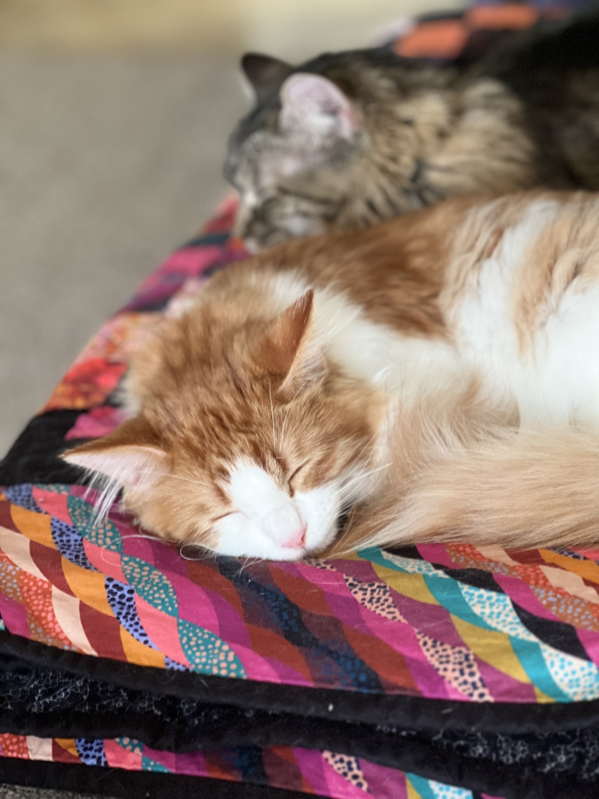

About me:
Hello, my name is Shannon. I am a student at Southeast Technical College and I will be pursuing a degree in programming.
The Descent into Technology:
Starting from a very young age, I developed a great love for technology and video games. Over time, I have gone from playing on consoles and then eventually moving on to build my own custom PC. Because of technological advances, I have had the opportunity to upgrade my tower quite frequently. All of the upgrades I have done since, were my graphics card, ram, cpu cooler, tower fans, power supply, case, and the addition of a SSD card. I hope to replace my motherboard and cpu in the future. Oddly enough, I find the problem-solving aspect of putting together a computer and for it to work, extremely satisfying.
Fostering Animals:
Another great passion that I have is the love and care for animals, but mostly cats. Honestly, if it wasn't for my significant other, I would probably have way too many cats and other critters as I have such a soft-side for them. Over the past couple of years, we have adopted two cats named Mimi and Felix shown below.
Growing up, my parents gave me the opportunity of a lifetime that allowed me to work with all kinds of animals from different backgrounds and to foster and rehabilitate them. Which brings me to want to continue this in my adult life once I complete schooling. I would encourage anyone to please go adopt.